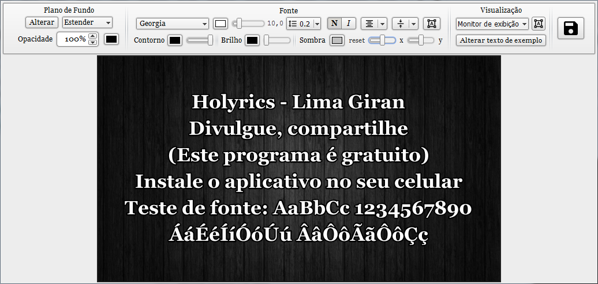

Crie temas personalizados para exibição das Músicas e dos versículos da Bíblia.
Suporta:
- Cores, imagens ou vídeos como plano de fundo;
- Controle de opacidade do plano de fundo;
- Negrito e itálico;
- Textos com contorno, sombra e brilho;
- Alinhamento, espaçamento entre linhas e margens.
